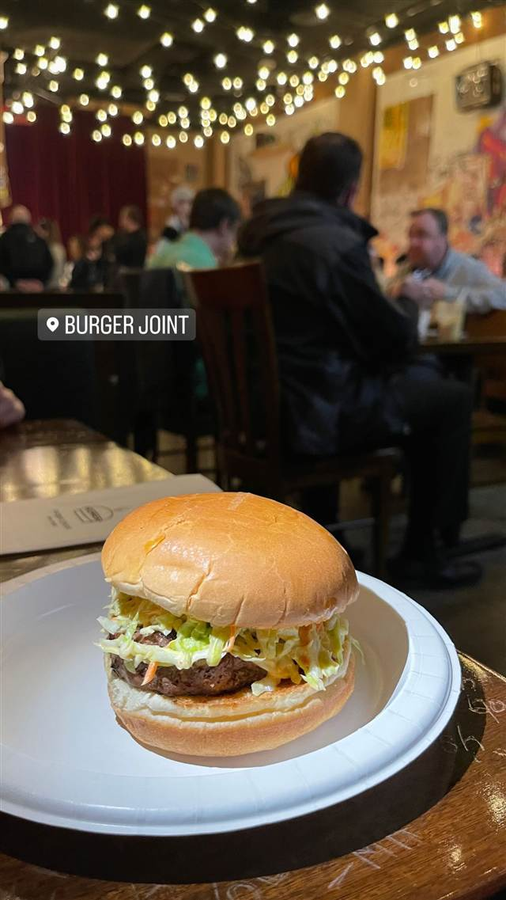

ハンバーガー · セントラルパーク南
Burger Joint (Thompson Central Park / 旧Le Parker Meridien内)
高級ホテルのロビー奥に隠れた秘密のバーガー店
BURGER JOINT
WHY GO
高級ホテルロビー奥の赤いカーテンに隠された秘密のバーガー店という設え
2002年、高級ホテルLe Parker Meridien（現Thompson Central Park）のロビー奥に、赤いカーテンで隠された「秘密のバーガー店」として誕生。1970年代風の鄙びた内装とホテルの豪華なロビーとのギャップが評判となり、ニューヨークを代表するバーガー店の一つになった。
TRIVIA
豆知識
- ホテルの大理石のロビー奥に、天井まで届く赤いベルベットのカーテンで隠された入口があり、ネオンのハンバーガー看板だけが目印
- 「隠れ家」的な演出は開業当初から仕込まれたコンセプト・宣伝戦略だった
- 料理人アンソニー・ボーディンがこの店を気に入っていたことでも知られる
REVIEWS
世間の評判
行列の長さと隠れ家的な立地
- 赤いカーテンの奥という隠れ家的な立地を楽しむ人が多い
- 混雑時は40分以上並ぶこともあり待ち時間の長さを指摘する声がある
- 以前ほどの満足感がないという声もある
Tripadvisor 口コミ5622件
| 創業 | 2002年開業 |
|---|---|
| 系譜 | 高級ホテルLe Parker Meridien（現Thompson Central Park）のロビーに隠れる形で誕生 |
| 看板 | チーズバーガー |
| こだわり | 1970年代風の鄙びた内装（ビニール製ブース、木目パネル、映画・スポーツポスター、落書き）とホテルの大理石ロビーとの対比が特徴 |
| どこから | 海外 |
| 行くなら | 行列 |
| 予算 | 夜 $8～$12 |
| 予約 | 予約不可 |
| 場所 | 57丁目-7番街駅 119 W 56th St, New York, NY 10019 |
| メモ | 赤いベルベットのカーテンで隠された入口。ネオンのバーガー看板だけが目印で、行列ができる人気店 |
食べたもの：ハンバーガー